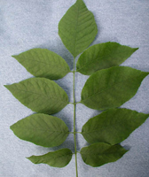
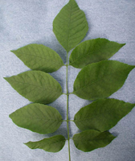

Saving Princeton's Ash Trees
Our ash trees are under attack from an invasive beetle. With proper identification, we can stop the attack. This requires our collaboration on identifying both healthy and infected ash trees.


Our ash trees are under attack from an invasive beetle. With proper identification, we can stop the attack. This requires our collaboration on identifying both healthy and infected ash trees.
